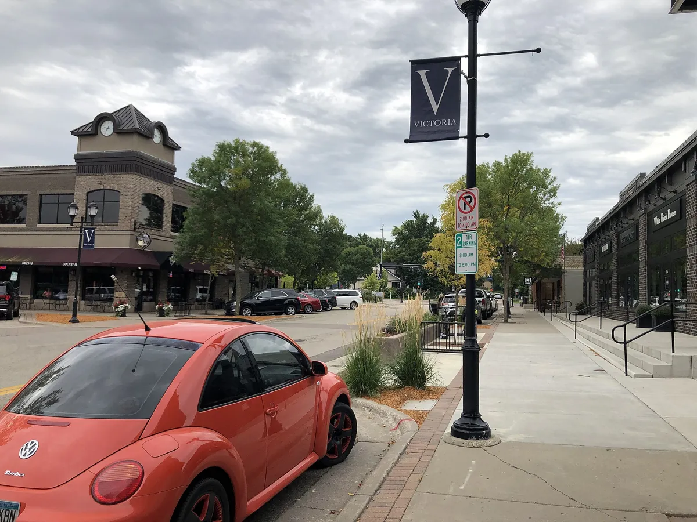
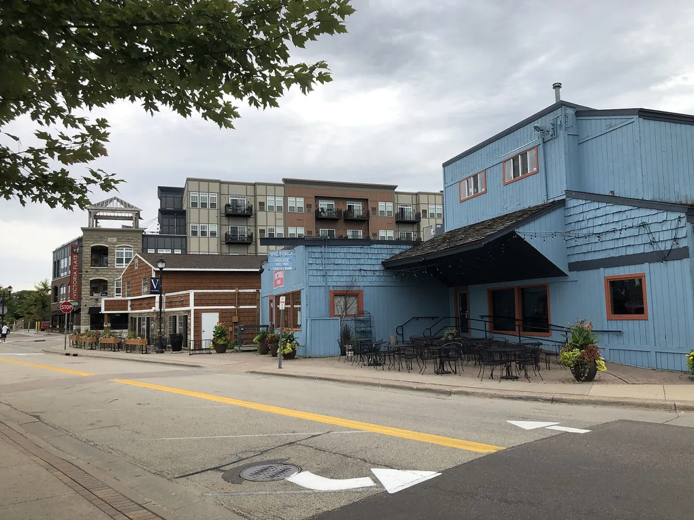
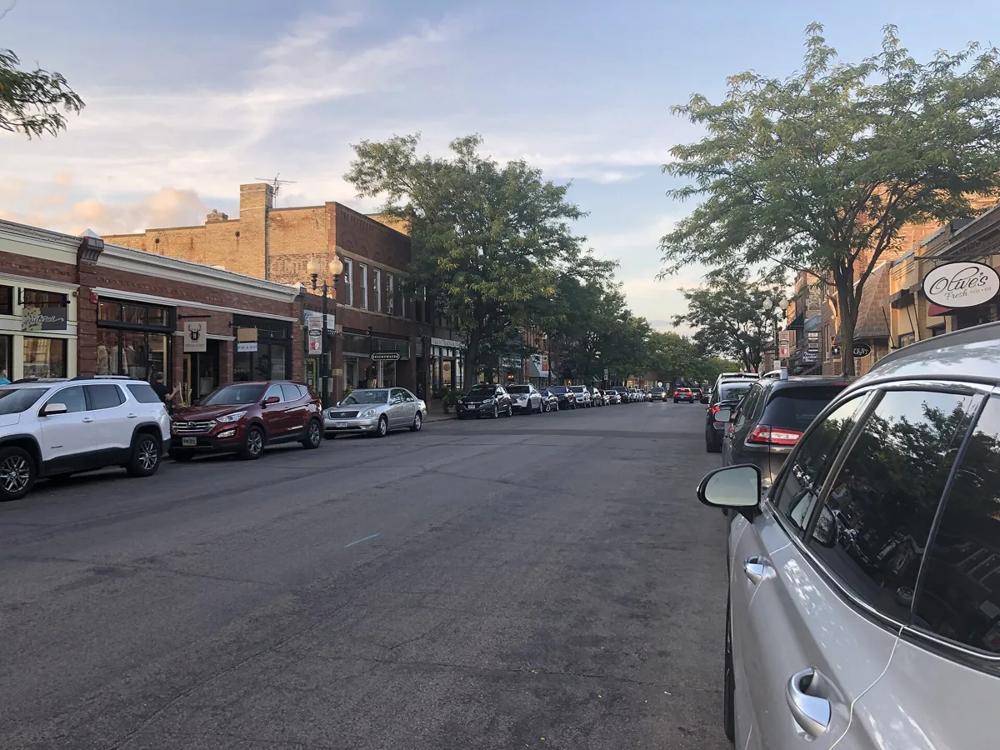
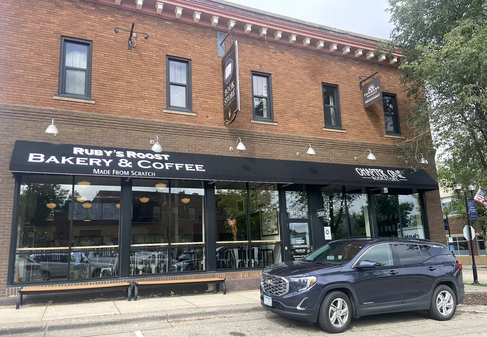
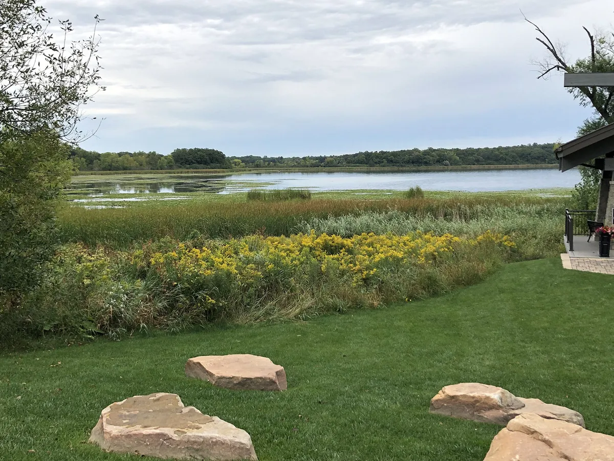
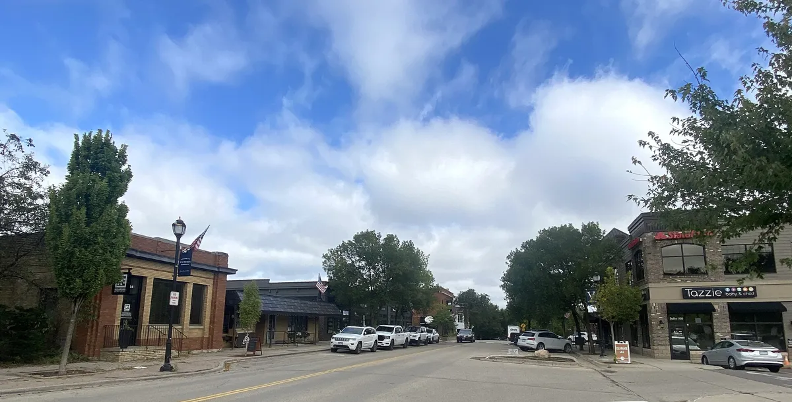

There's a bell hanging in a brand new tower on the south side of Victoria, and it's older than almost anything else in town. Back in 1913, farmers and shopkeepers here started a volunteer fire department, and that bell is how they called people in. This fall it went up into the tower of the new fire station on Kochia Lane, and the station started taking calls on September 21.
They didn't cut a ribbon, either. The two longest serving firefighters, Steve Dahl and Rick Leuthner, coupled two fire hoses together to open the place. The building is big, about 37,650 square feet, with six truck bays, a training tower and living quarters so a crew can stay on duty, which the city says it needs as Victoria grows.
And that's the word you keep running into here. Grows.
Downtown West: the downtown that's coming west
Victoria's downtown sits on the north shore of Stieger Lake. For years the city has had plans to stretch it west, along the edge of Carver Park Reserve, and now it's actually happening. The city calls it Downtown West.
The first piece is the Olivine Apartments, 145 units, under construction since January 2025. In February 2026 the city council approved the next phase: four retail and commercial buildings and a mixed use building with shops on the ground floor and eight condos above. The plans also call for row homes, which the city says Victoria doesn't really have yet, a central plaza for events, and an extension of the regional trail, all laid out like a main street you can walk.
So picture it. Storefronts on a walkable street, a plaza, a trail running through, and a lake a block away.

Victoria by the numbers: how fast is Victoria, MN growing?
I like to let the numbers talk here, because they're pretty striking for a town this size.
- 7,345 to 10,546Victoria's population in the 2010 and 2020 Census, a jump of about 44 percent in ten years.
- 12,447The Census Bureau's estimate for July 2025, up about 18 percent since 2020.
- 3,542 to 4,209Households in Victoria from 2020 to 2024, by the Metropolitan Council's estimate.
- 14,400, 17,000, 20,700The Metropolitan Council's population forecast for Victoria in 2030, 2040 and 2050, with households forecast to reach 7,500 by 2050. For comparison, the same planning tables have Excelsior going from about 2,400 people to 2,800.
- 160 homes and 45 townhomesNew single family homes and approved townhomes in Victoria in 2024, according to the mayor's year in review.
- 145 apartments, 4 retail buildings, 8 condosThe first two pieces of Downtown West, with row homes, a plaza and more homes planned after that.
Here's how I think about it. When a town is still filling in its downtown, you get to pick your spot before the plaza and the new storefronts are done, and you get to watch it come together. I can't tell you what that means for prices, and nobody honestly can. What I can tell you is what's on the city's books, and it's a lot.
My take. I've been calling Victoria the Excelsior of the west, and I'll tell you why. Excelsior has Water Street, a walkable downtown that runs right down to Lake Minnetonka, with the regional trail rolling through it and a run of new restaurants that the Star Tribune called one of the metro's most talked about food destinations. Victoria has a walkable downtown on Stieger Lake, that same Lake Minnetonka Regional Trail, and new restaurants and homes going up right now. It isn't Excelsior yet. Excelsior has a 150 year head start. But I think it's heading that way.

Fried chicken, lake fish and a deck on the trail
Here's the kind of thing that makes me think so. Erik Forsberg, who gave downtown Minneapolis the Devil's Advocate, is opening Harland Chicken and Fish in one of Victoria's historic downtown buildings. He told the Star Tribune it's an ode to shore lunches and lake fish fries, with fried chicken, fish and chips, and walleye, sunnies or pike depending on the season. There will be 20 craft beer taps, and a deck that faces the trail, the amphitheater and Stieger Lake.
I'll admit I have a soft spot for this one. I'm the one who sold Erik that building, the old Victoria House. As of this week it's still on its way. The city council has a hearing on its liquor license on October 26.
Excelsior went through something like this not long ago. Restaurants on Water Street had closed after the pandemic, and then new ones opened one after another. The head of the local chamber called it the domino effect.

Living in Victoria, MN: a town that throws a lot of parties
Victoria already acts like a downtown town. All summer, Wednesday nights mean free Live by the Lake concerts at the bandstand on Stieger Lake, and twice a month the Victoria Business Association fills downtown with classic cars. This fall there's trick or treating at the downtown shops and Bayfront Park on Halloween afternoon, Small Business Saturday on November 28, and Light Up Victoria at Lions Park on December 3.
Excelsior has its own version, and it's been at it longer. Apple Days has been running since 1935.


The trail that ties it together
The Lake Minnetonka Regional Trail starts at Carver Park Reserve, right at Victoria's edge, and runs about 15.8 miles to Hopkins. Along the way it goes straight through Excelsior. So the two towns are literally on the same trail, and the city plows it through Victoria in winter.
Carver Park Reserve is the big backyard here, with miles of trails, a nature center, boat access and the Lake Auburn campground, which reopens April 23, 2027. You can ride a bike from downtown and camp there. And the city counts more than 27 parks of its own, plus all 3,700 acres of Carver Park Reserve, which it has annexed.
For homes and prices around town, see my Victoria homes page, or my Excelsior page to compare, and for shops and places to eat, the downtown Victoria guide.